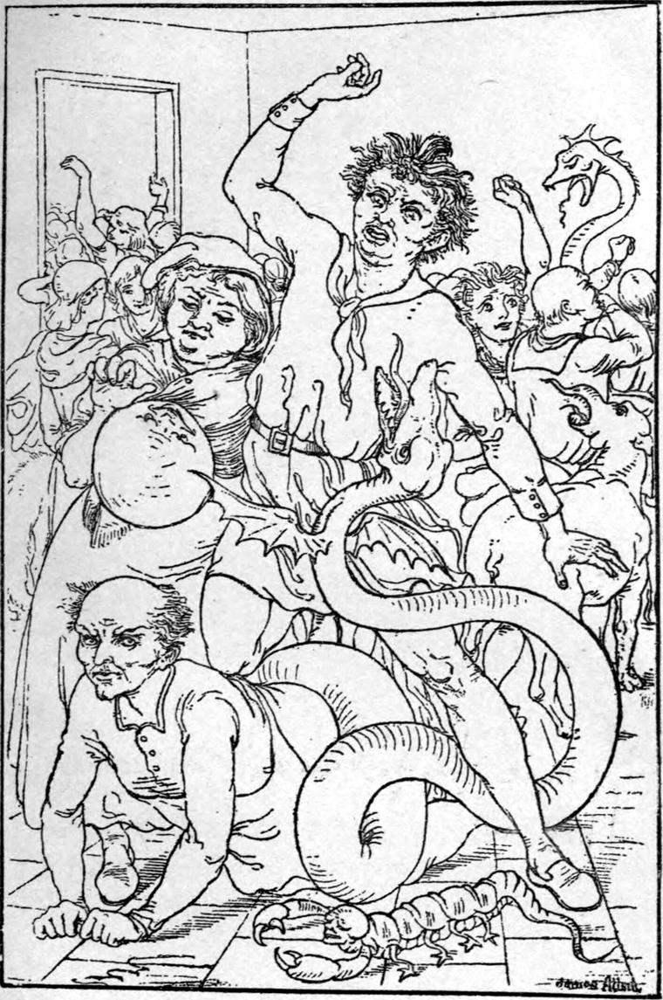

By the time the girl reached the servants' hall they were seated at supper. A loud, confused exclamation arose when she entered. No one made room for her; all stared with unfriendly eyes. A page, who entered the next minute by another door, came to her side.
'Where do you come from, hussy?' shouted the butler, and knocked his fist on the table with a loud clang.
He had gone to fetch wine, had found the stair door broken open and the cellar door locked, and had turned and fled. Among his fellows, however, he had now regained what courage could be called his.
'From the cellar,' she replied. 'The messenger broke open the door, and sent me to you again.'
'The messenger! Pooh! What messenger?'
'The same who sent me before to tell you to repent.'
'What! Will you go fooling it still? Haven't you had enough of it?' cried the butler in a rage, and starting to his feet, drew near threateningly.
'I must do as I am told,' said the girl.
'Then why don't you do as I tell you, and hold your tongue?' said the butler. 'Who wants your preachments? If anybody here has anything to repent Of, isn't that enough—and more than enough for him—but you must come bothering about, and stirring up, till not a drop of quiet will settle inside him? You come along with me, young woman; we'll see if we can't find a lock somewhere in the house that'll hold you in!'
'Hands off, Mr Butler!' said the page, and stepped between.
'Oh, ho!' cried the butler, and pointed his fat finger at him. 'That's you, is it, my fine fellow? So it's you that's up to her tricks, is it?'
The youth did not answer, only stood with flashing eyes fixed on him, until, growing angrier and angrier, but not daring a step nearer, he burst out with a rude but quavering authority:
'Leave the house, both of you! Be off, or I'll have Mr Steward to talk to you. Threaten your masters, indeed! Out of the house with you, and show us the way you tell us of!'
Two or three of the footmen got up and ranged themselves behind the butler.
'Don't say I threaten you, Mr Butler,' expostulated the girl from behind the page. 'The messenger said I was to tell you again, and give you one chance more.'
'Did the messenger mention me in particular?' asked the butler, looking the page unsteadily in the face.
'No, sir,' answered the girl.
'I thought not! I should like to hear him!'
'Then hear him now,' said Curdie, who that moment entered at the opposite corner of the hall. 'I speak of the butler in particular when I say that I know more evil of him than of any of the rest. He will not let either his own conscience or my messenger speak to him: I therefore now speak myself. I proclaim him a villain, and a traitor to His Majesty the king. But what better is any one of you who cares only for himself, eats, drinks, takes good money, and gives vile service in return, stealing and wasting the king's property, and making of the palace, which ought to be an example of order and sobriety, a disgrace to the country?'
For a moment all stood astonished into silence by this bold speech from a stranger. True, they saw by his mattock over his shoulder that he was nothing but a miner boy, yet for a moment the truth told notwithstanding. Then a great roaring laugh burst from the biggest of the footmen as he came shouldering his way through the crowd toward Curdie.
'Yes, I'm right,' he cried; 'I thought as much! This messenger, forsooth, is nothing but a gallows bird—a fellow the city marshal was going to hang, but unfortunately put it off till he should be starved enough to save rope and be throttled with a pack thread. He broke prison, and here he is preaching!' As he spoke, he stretched out his great hand to lay hold of him. Curdie caught it in his left hand, and heaved his mattock with the other. Finding, however, nothing worse than an ox hoof, he restrained himself, stepped back a pace or two, shifted his mattock to his left hand, and struck him a little smart blow on the shoulder. His arm dropped by his side, he gave a roar, and drew back.
His fellows came crowding upon Curdie. Some called to the dogs; others swore; the women screamed; the footmen and pages got round him in a half circle, which he kept from closing by swinging his mattock, and here and there threatening a blow.
'Whoever confesses to having done anything wrong in this house, however small, however great, and means to do better, let him come to this corner of the room,' he cried.
None moved but the page, who went toward him skirting the wall. When they caught sight of him, the crowd broke into a hiss of derision.
'There! See! Look at the sinner! He confesses! Actually confesses! Come, what is it you stole? The barefaced hypocrite! There's your sort to set up for reproving other people! Where's the other now?'
But the maid had left the room, and they let the page pass, for he looked dangerous to stop. Curdie had just put him betwixt him and the wall, behind the door, when in rushed the butler with the huge kitchen poker, the point of which he had blown red-hot in the fire, followed by the cook with his longest spit. Through the crowd, which scattered right and left before them, they came down upon Curdie. Uttering a shrill whistle, he caught the poker a blow with his mattock, knocking the point to the ground, while the page behind him started forward, and seizing the point of the spit, held on to it with both hands, the cook kicking him furiously.
Ere the butler could raise the poker again, or the cook recover the spit, with a roar to terrify the dead, Lina dashed into the room, her eyes flaming like candles. She went straight at the butler. He was down in a moment, and she on the top of him, wagging her tail over him like a lioness.
'Don't kill him, Lina,' said Curdie.
'Oh, Mr Miner!' cried the butler.
'Put your foot on his mouth, Lina,' said Curdie. 'The truth Fear tells is not much better than her lies.'
The rest of the creatures now came stalking, rolling, leaping, gliding, hobbling into the room, and each as he came took the next place along the wall, until, solemn and grotesque, all stood ranged, awaiting orders.
And now some of the culprits were stealing to the doors nearest them. Curdie whispered to the two creatures next him. Off went Ballbody, rolling and bounding through the crowd like a spent cannon shot, and when the foremost reached the door to the corridor, there he lay at the foot of it grinning; to the other door scuttled a scorpion, as big as a huge crab. The rest stood so still that some began to think they were only boys dressed up to look awful; they persuaded themselves they were only another part of the housemaid's and page's vengeful contrivance, and their evil spirits began to rise again. Meantime Curdie had, with a second sharp blow from the hammer of his mattock, disabled the cook, so that he yielded the spit with a groan. He now turned to the avengers.
'Go at them,' he said.
The whole nine-and-forty obeyed at once, each for himself, and after his own fashion. A scene of confusion and terror followed. The crowd scattered like a dance of flies. The creatures had been instructed not to hurt much, but to hunt incessantly, until everyone had rushed from the house. The women shrieked, and ran hither and thither through the hall, pursued each by her own horror, and snapped at by every other in passing. If one threw herself down in hysterical despair, she was instantly poked or clawed or nibbled up again.

Though they were quite as frightened at first, the men did not run so fast; and by and by some of them finding they were only glared at, and followed, and pushed, began to summon up courage once more, and with courage came impudence. The tapir had the big footman in charge: the fellow stood stock-still, and let the beast come up to him, then put out his finger and playfully patted his nose. The tapir gave the nose a little twist, and the finger lay on the floor.
Then indeed did the footman run.
Gradually the avengers grew more severe, and the terrors of the imagination were fast yielding to those of sensuous experience, when a page, perceiving one of the doors no longer guarded, sprang at it, and ran out. Another and another followed. Not a beast went after, until, one by one, they were every one gone from the hall, and the whole crew in the kitchen.
There they were beginning to congratulate themselves that all was over, when in came the creatures trooping after them, and the second act of their terror and pain began. They were flung about in all directions; their clothes were torn from them; they were pinched and scratched any- and everywhere; Ballbody kept rolling up them and over them, confining his attentions to no one in particular; the scorpion kept grabbing at their legs with his huge pincers; a three-foot centipede kept screwing up their bodies, nipping as he went; varied as numerous were their woes. Nor was it long before the last of them had fled from the kitchen to the sculleries.
But thither also they were followed, and there again they were hunted about. They were bespattered with the dirt of their own neglect; they were soused in the stinking water that had boiled greens; they were smeared with rancid dripping; their faces were rubbed in maggots: I dare not tell all that was done to them. At last they got the door into a back yard open, and rushed out. Then first they knew that the wind was howling and the rain falling in sheets. But there was no rest for them even there. Thither also were they followed by the inexorable avengers, and the only door here was a door out of the palace: out every soul of them was driven, and left, some standing, some lying, some crawling, to the farther buffeting of the waterspouts and whirlwinds ranging every street of the city. The door was flung to behind them, and they heard it locked and bolted and barred against them.